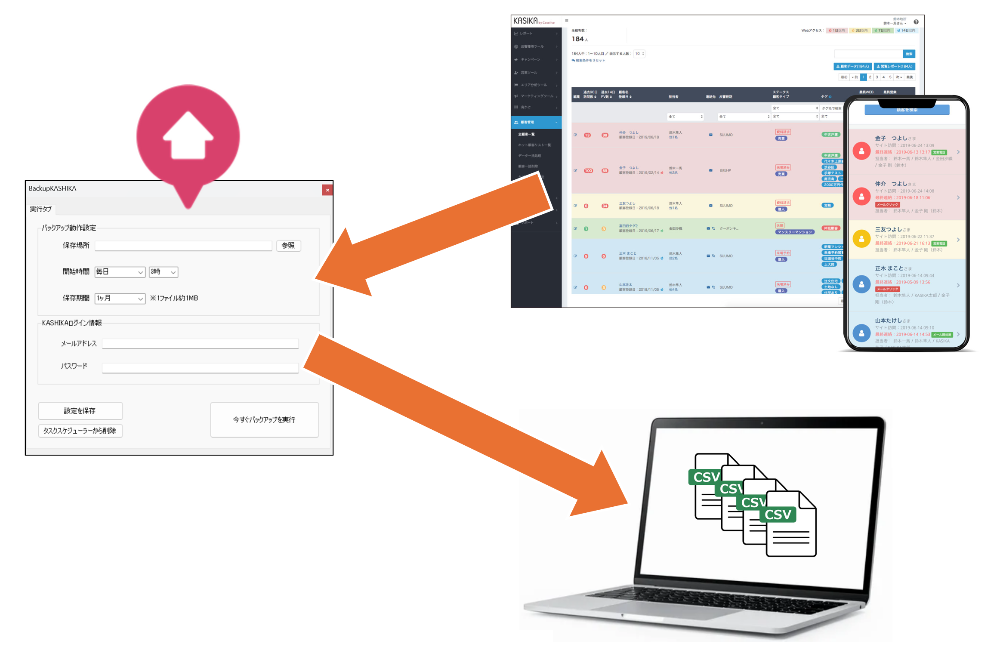
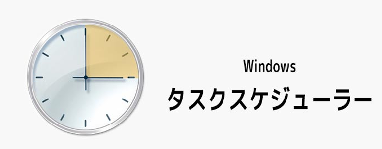
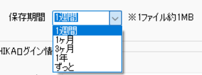
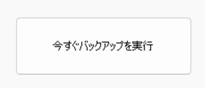
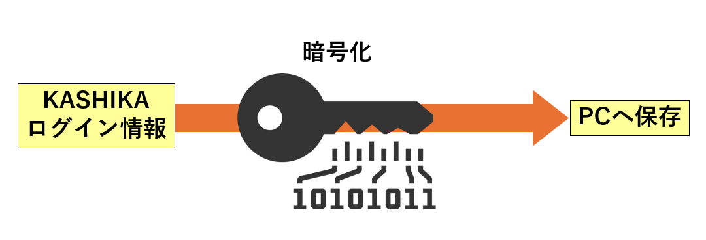
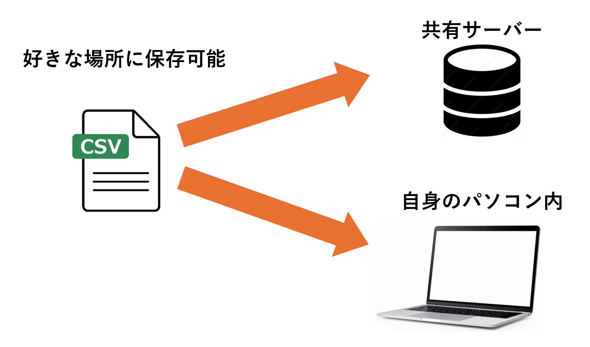

KASHIKA自動バックアップ

導入効果
🛡️ リスク回避：誤操作によるデータ上書き時も、過去の状態へ復元可能
☁️ 自動運用：一度の設定で毎日自動実行
💾 容量最適化：保存期間の設定により、ストレージを圧迫せず効率的に管理
開発の背景・概要
顧客管理システム「KASHIKA」において、担当営業を一括で誤更新してしまうなどの人的ミスが発生し、データの復旧が困難になるという課題がありました。
KASHIKA自動バックアップは、顧客データを守るために開発されたバックアップ専用ソフトです。万が一の事態が起きても、以前の状態に戻せる環境を提供することで、現場の安心感を支えます。
主な機能
スケジュール実行設定
バックアップを実行する頻度（毎日など）と開始時間を自由に設定可能です。Windowsのタスクスケジューラと自動で連携し、PCが起動していれば指定時間にバックアップを自動で取得します。

保存期間の自動管理
バックアップデータの保存期間（1ヶ月間など）を指定できます。期限を過ぎた古いデータは自動で削除されるため、容量を無駄に消費することはありません。

ワンクリック手動バックアップ
定期実行を待たずに、今すぐデータを保護したい場合のための「今すぐバックアップを実行」ボタンを搭載。大規模なデータインポートや設定変更を行う直前の安全確保に役立ちます。

セキュアなログイン情報保持
KASHIKAのログイン用メールアドレスとパスワードは暗号化された状態で保持されるため、毎回入力する手間を省きつつ、安全に自動ログイン処理を行います。

柔軟な保存先指定
共有サーバーや特定のフォルダなど、バックアップファイルの保存場所を自由に選択可能です。社内ルールに合わせた最適な場所でのデータ保管を実現します。
